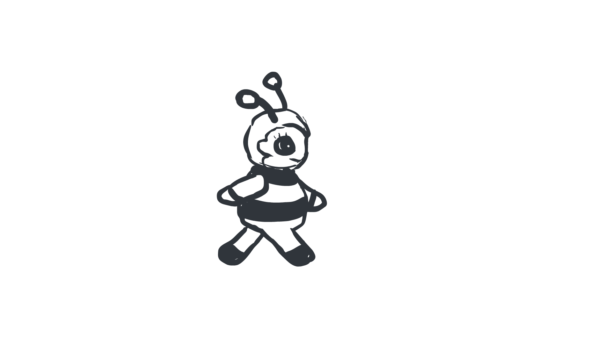

Animations
Educational interactive animation for 3-year-olds.
I created an interactive animation tailored for 3-4-year-olds,aiming to teach them about growth process of tomatoes through an interactive storytelling. Recognising the significance of introducing children to the origins of food and the basics of cultivation. All the assets and sounds were created by myself.
Web banner for Recycling
The web banner was designed with the objective of promoting recycling initiatives. It serves as a visual call-to-action to encourage individuals to engage in environmentally responsible behavior by recycling. The banner utilizes compelling imagery and concise messaging to convey the importance of recycling and inspire action towards sustainability. Through its design, the banner aims to motivate viewers to participate in efforts to protect the environment.
Character walkcycle
This GIF serves as a practice animation for my game design endeavors. Crafted meticulously with hand-drawn keyframes, the animation exemplifies my dedication to mastering the art of game design. Each frame intricately contributes to the final motion, showcasing the fluidity and detail I strive to achieve in my game projects. As an aspiring game designer, I continually refine my skills through such practice animations, aiming to bring immersive and captivating experiences to players
